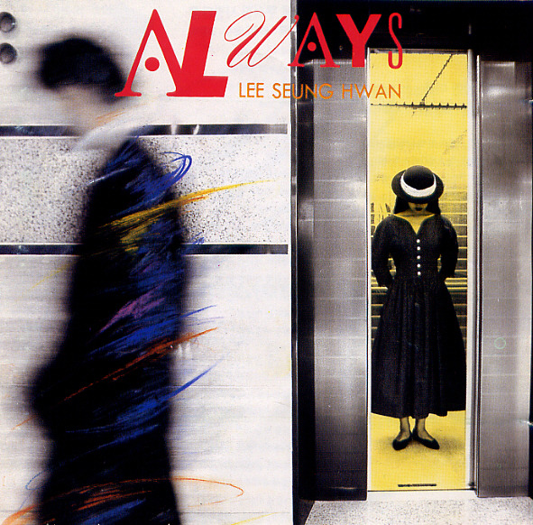

안녕하세요 라보엠입니다.
지난 12월 13일, 서울 여의도 국회의사당 앞에서 열린 윤석열 대통령 탄핵 촉구 집회에 가수 이승환이 참여해 뜨거운 화제를 모았습니다. 탄핵 집회 전문 가수라고 자칭한 이승환은 이날 무대에서 자신의 히트곡들을 개사해 부르며 집회의 열기를 한층 더 고조시켰습니다.
탄핵 콘서트 - 이승환
이승환은 이날 '세상에 뿌려진 사랑만큼', '사랑하나요', '덩크슛', '물어본다' 등 자신의 대표곡들을 불렀습니다. 특히 '덩크슛'의 가사를 "주문을 외워보자, 내려와라 윤석열"로 개사해 부르며 집회 참가자들의 호응을 이끌어냈습니다. 이는 현 정부에 대한 강력한 비판 메시지를 담고 있어, 집회 현장의 분위기를 한층 고조시켰습니다.
세상에 뿌려진 사랑만큼 노래 가사
1.
여전히 내게는 모자란 날 보는 너의 그 눈빛이
세상에 뿌려진 사랑만큼 알 수 없던 그때
언제나 세월은 그렇게 잦은 잊음을 만들지만
정들은 그대의 그늘을 떠남은 지금 얘긴걸
사랑한다고 말하진 않았지 이젠 후회하지만
그대 뒤늦은 말 그 고백을 등뒤로
그대의 얼굴과 그대의 이름과
그대의 얘기와 지나간 내 정든 날
사랑은 그렇게 이뤄진 듯 해도
이제와 남는 건 날 기다린 이별뿐
2.
언제나 세월은 그렇게 잦은 잊음을 만들지만
정들은 그대의 그늘을 떠남은 지금 얘긴걸
사랑한다고 말하진 않았지 이젠 후회하지만
그대 뒤늦은 말 그 고백을 등뒤로
그대의 얼굴과 그대의 이름과
그대의 얘기와 지나간 내 정든 날
사랑은 그렇게 이뤄진 듯 해도
이제와 남는 건 날 기다린 이별뿐
br.
바람이 불 때마다 느껴질 우리의 거리만큼
난 기다림을 믿는 대신 무뎌짐을 바라겠지
가려진 그대의 슬픔을 보던 날
이 세상 끝까지 약속한 내 어린 맘
사랑은 그렇게 이뤄진 듯 해도
이제와 남는 건 날 기다린 이별뿐
그대의 얼굴과 그대의 이름과
그대의 얘기와 지나간 내 정든 날
사랑은 그렇게 이뤄진 듯 해도
이제와 남는 건 날 기다린 이별뿐

이승환의 소신 발언
노래 후 이승환은 무대에서 자신의 소신을 밝혔습니다. 그는 "2016년 박근혜 퇴진 집회, 2019년 검찰 개혁 조국 수호 집회 이후 다시 이런 집회 무대에 안 설 줄 알았다"며 아쉬움을 표했습니다. 그러면서도 "제 나이쯤 되는 사람 중 정신 제대로 박힌 사람이라면 '무엇이 되느냐'보다 '어떻게 사느냐'가 더 중요한지 생각하게 된다"고 말해 집회 참여의 이유를 설명했습니다.
이승환은 자신을 둘러싼 정치적 오해에 대해서도 해명했습니다. "나를 (공산당으로) 오해하는데 내 출신은 부산, 강남 8학군 출신이다. 보수 엘리트 코스 밟은 사람이다"라고 밝히며, 자신의 배경을 설명했습니다. 이는 그의 참여가 단순한 정치적 성향이 아닌, 사회 정의에 대한 신념에서 비롯되었음을 강조하는 발언으로 해석됩니다.
이승환은 이번 집회의 의미에 대해서도 언급했습니다. "이런 집회 무대에 서지 않아도 되는, 피 같은 돈을 기부하지 않아도 되는 세상이 오길 바란다"고 말하며, 더 나은 사회에 대한 희망을 전했습니다. 또한 "내일은 무조건 끝내길, 집회 더 이상 안 하고 싶다"고 덧붙여, 12월 14일 예정된 탄핵소추안 표결에 대한 기대감을 표현했습니다.
맺음말
이승환의 공연과 발언은 집회에 참석한 시민들로부터 뜨거운 호응을 받았습니다. 추운 날씨에도 불구하고 많은 시민들이 참석해 그의 노래를 함께 불렀고, 발언에 공감의 뜻을 표했습니다. 이는 이승환이 단순한 가수를 넘어 시민들의 목소리를 대변하는 '촛불의 상징'으로 자리매김했음을 보여줍니다. 이승환의 이번 집회 참여는 한국 사회의 현 상황을 반영하는 중요한 사건으로 볼 수 있습니다. 그의 참여가 향후 정치적 변화에 어떤 영향을 미칠지 주목됩니다. 12월 14일 국회에서 있었던 탄핵소추안 표결은 국민들의 뜨거운 요구로 가결이라는 결과를 이끌어낼 수 있었습니다.
이승환의 탄핵 집회 참여는 예술가의 사회적 책임과 역할에 대해 다시 한번 생각해보게 하는 계기가 되었습니다. 그의 용기 있는 행동과 메시지는 많은 이들에게 깊은 인상을 남겼으며, 앞으로의 사회 변화에 대한 희망을 전달했습니다. 이번 사건을 통해 우리 사회가 더욱 성숙한 민주주의로 나아가길 기대해봅니다.